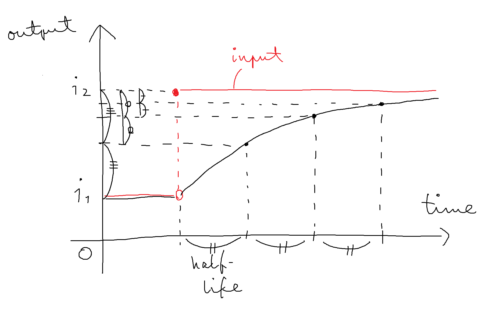

入力の変化に対して出力をゆっくり追従させるエフェクトです。
任意の信号を受け取ります。
| 名前 | 必須/省略時 | 説明 |
|---|---|---|
halflife |
必須 | 追従における「半減期」（単位は秒）。 |
イベントを受け取りません。
入力に対してゆっくり追従する値。
// 周波数をゆっくり変化させる
@instrument ^a, glide { halflife: 0.1 } | sawOsc * adsrEnvglide
は、入力が十分長い時間にわたって一定であれば、同じ値を出力しますが、入力が変化した場合、新しい入力値をすぐには出力に反映せず、出力を従来の入力値から新しい入力値へとゆっくり近づけていきます。
遷移速度はパラメータ入力の「半減期」（half-life）で指定します。半減期は、入力が から に変化したとき、出力が に達するのにかかる時間です。
半減期という用語からわかるように、出力は指数的に変化します。このため厳密には入力と出力が完全に等しくなることは永久にないのですが、通常は聴覚上、また計算精度上、「そのうち」等しくなると考えて問題はありません。
